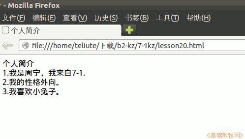

2012-2013 第二学期七年级文字处理和网页教学设计
作者：TeliuTe 来源：基础教程网
二十、学会设置页面标题属性 返回目录 下一课
（一）教学设计
1、学习目标：学会设置页面标题属性
2、注意事项：绕过弯来，既不要跳也不要落，一楼过了二楼
3、教学过程：
1）教师准备学案和板书；
2）学生整队进入，开机抄黑板上笔记；
3）教师讲解板书演示操作；
4）学生打指法、日志、完成操作；
5）教师打勾记录学生指法成绩，检查日志和操作；
注：学生抄完笔记就开始打指法、日志，老师讲完后再继续完成；
（二）板书设计(学生笔记)
第20课 学会设置页面标题属性
1、打开主文件夹，打开kompzer 文件夹，再运行
2、点菜单：格式，页面标题（最下边）
3、语言：中文/中国从左到右，选择字符UTF-8
4、保存到7-2kz, 文件名lesson20.html
5、点浏览
--
操作指南
个人简介
1、我是×××，来自 7-2
2、我的性格。。。
3、我喜欢。。。
操作图示：

（三）课后记 2013-05-14 17:28
--
有两个班最后忘记讲标题了，浏览网页以后把上面的标题点一下
开始发消息不让了，逗的别人分心挨老师的骂
--
外面搞施工，吵的头疼
内容不难，上节课的内容别忘记，接着做就好
--
网页跟前面的日志、指法都一样，直接挨着点就是了
不必再去找来找去，有一些绕不过弯的
--
慢慢走就是了，不必太在意能学多少
估计也就是学后面的忘记前面的，只是培养一个好的操作习惯
--
鼠标、键盘的操作，和一些常规的操作技巧
软件的用法，等到用的时候自然会用心去学的
返回目录 下一课
本教程由86团学校TeliuTe制作|著作权所有
基础教程网：http://teliute.org/
美丽的校园……
转载和引用本站内容，请保留作者和本站链接。